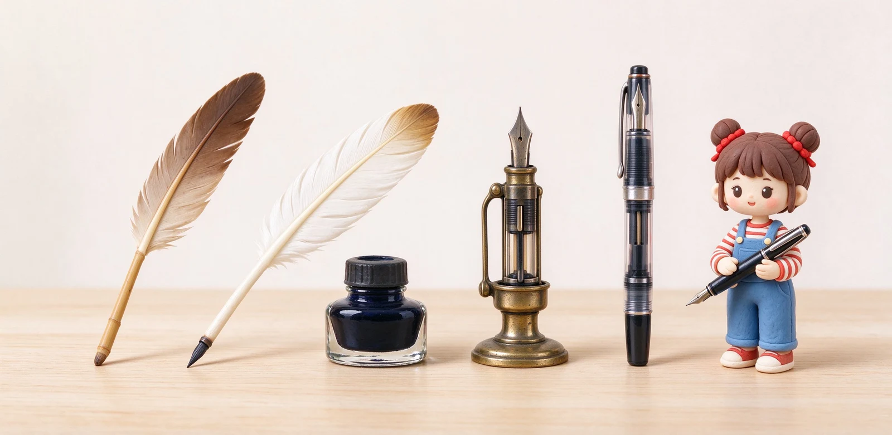

語意摘要：人類先後用過蘆葦筆、羽毛筆（鵝毛削尖、反覆蘸墨）與早期不可靠的儲墨筆。1827 年有人申請過帶儲墨槽的專利，但真正讓鋼筆可靠、不漏水的，是 1884 年美國人保險業務員 Lewis Waterman 發明的三道溝毛細供墨系統。此後 20 世紀又陸續出現拉桿上墨、按鈕上墨與活塞上墨，才變成今天的樣子。
鋼筆之前：人類用了上千年的『蘸一下寫幾個字』
在鋼筆出現以前，歐洲與中東的日常書寫靠的是蘆葦筆與羽毛筆（quill）。把天鵝或鵝的初級飛羽削成斜尖，蘸一下墨水瓶、寫幾個字，墨水乾了又得再蘸；筆尖寫鈍了還要重新削。一本中世紀手稿的僧侶，桌上永遠擺著磨刀石、小刀與墨水瓶。
這種寫法最大的痛是『斷斷續續』：你永遠在等墨、在削筆。人們早就想要一種『自己肚子裡裝著墨水、寫一整頁都不用蘸』的筆，也就是後來所謂的儲墨筆（fountain pen）。
早期儲墨筆：有點像懷孕，就是漏
19 世紀初開始有人做出『內建墨水槽』的筆，例如 1827 年羅馬尼亞人 Petrache Poenaru 申請過帶儲墨槽的鋼筆專利。但這些早期筆有個致命問題：墨水流速無法控制——要嘛不出水，要嘛一次灌一大滴，把紙與你的手弄髒。
所以它們一直只是少數人的玩具，無法日常使用。真正卡住人類兩百年的難題，不是『把墨水裝進筆裡』，而是『讓墨水一滴一滴、剛好夠用、又不漏地送到筆尖』。
轉捩點：1884 年，一個因為漏水丟了客戶的業務員
現代鋼筆的故事，主角是美國人保險業務員 Lewis Edson Waterman。流傳很廣的一段軼事是：他好不容易爭取到一個大合約，簽約當天掏出自備的鋼筆，結果筆一漏水、把合約紙弄髒，等他回去換筆，客戶已經跑去找別的業務員。這一筆生意的損失，讓他決心自己搞懂『墨水為什麼會亂流』。
1884 年 2 月，Waterman 申請了改變歷史的專利：他在筆尖下方做了三條細溝，利用毛細現象，讓墨水穩定、緩慢地流到筆尖，同時讓空氣從底部小孔進入補位——墨水用掉多少、空氣就進多少，壓力平衡，於是不再大漏。這個『三道溝供墨』就是現代鋼筆筆舌的雛形。

20 世紀：上墨方式的戰國時代
Waterman 解決了『出墨』，接下來人們開始對『怎麼把墨水裝進去』大做文章。20 世紀初出現一整排上墨機制：拉桿上墨（Sheaffer 1912 年推廣）、按鈕上墨（Parker 力推）、旋轉活塞上墨、以及後來的真空上墨。每一種都是為了更方便、更大量地把墨水吸進筆桿。
到了 20 世紀中後期，卡式墨水管與吸墨器這種『換芯式』設計興起，鋼筆才變得像今天這樣好上手——不用碰瓶裝墨、隨插隨寫。你現在買的入門鋼筆，幾乎都是這條演化路線的最終產物。
為什麼這段歷史跟你現在選筆有關
讀完這段你會明白幾件事：為什麼鋼筆要靠『筆舌鰭片』（當年那三道溝的放大版）穩定出墨、為什麼現代鋼筆強調『不用壓、靠重力與毛細』、以及為什麼高級筆還在堅持活塞與真空上墨——它們是這場一百年技術演化的頂點。
常見問題 FAQ
鋼筆到底是誰發明的？
Waterman 為什麼要發明鋼筆？
鋼筆之前用什麼寫字？
什麼是活塞上墨？
為什麼鋼筆不用壓就會出墨？
資料來源與核實依據
- Who Invented the Fountain Pen?（1827 Poenaru、1884 Waterman 毛細供墨）（PILOT Pen Australia）
- How Vintage Pens Shaped Writing History（Waterman 1884 三道溝、保險業務員軼事）（Fountain Pen Revolution）
- The history of the fountain pen: from quill to perfection（Montblanc）
- Fountain Pen 前世今生（1884 年 2 月 12 日專利、按鈕與拉桿上墨）（中國製筆協會）
相關文章推薦

原子筆怎麼普及的？從空軍飛行筆到平價國民筆的歷史
原子筆之所以能打敗鋼筆普及全世界，起點是個很現實的需求：鋼筆在高空會漏墨，而這個轉得動的小筆珠在什麼氣壓下都能寫。

卡式、吸墨器、活塞、真空上墨差別？四種鋼筆上墨機制優缺點
上墨方式的核心矛盾只有一個：裝得多就麻煩、裝得少就方便。卡式最省事但容量小，活塞真空裝得多但只喝瓶裝墨，中間的吸墨器是多數人的平衡點。

鋼筆新手完全指南：第一次買鋼筆前該懂的 10 件事
鋼筆不難入門，難的是第一支就買對：筆尖選 F、預算抓 300 到 800 元、先從卡式墨水管開始，九成新手不會後悔。